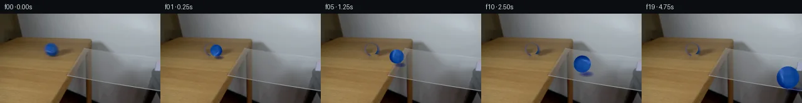
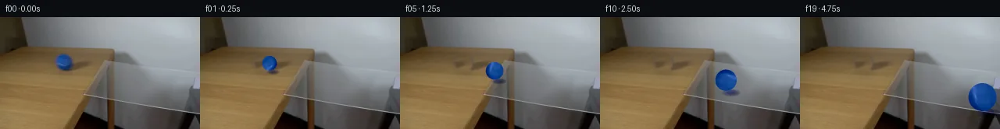
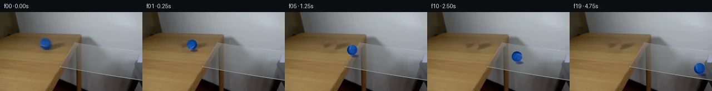
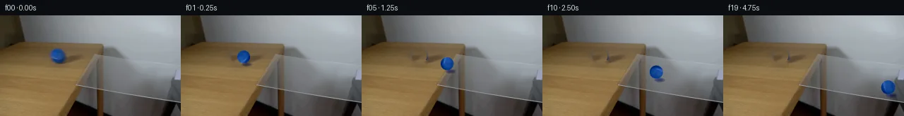
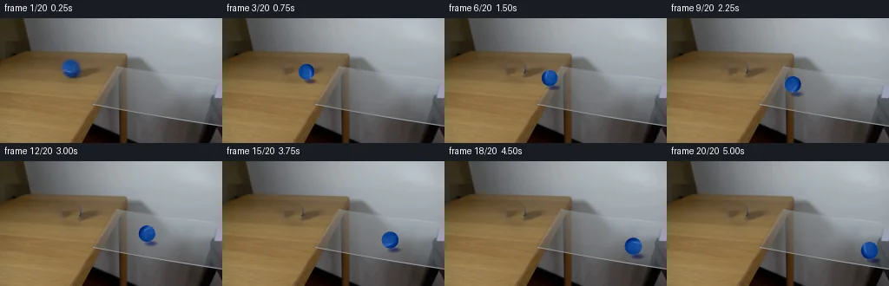
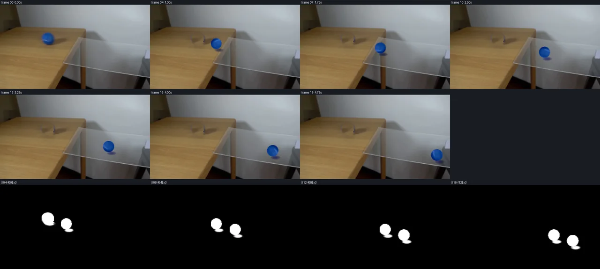

V0 · 初版
2026-11-05T10:44:59.560378+00:00 · RGB 30adec523449
![]()
Observable Generation Trace
把最终像素视频、Harness 冻结的每轮候选、真实工具事件和 Agent 自述放在同一页。可观测证据与模型自述分开标记，避免把“模型说它检查过”误当成真实工具调用。
![首帧]()
Static locked-off single-shot with fixed frame throughout filmed with constant framerate in real-time. The scene shows a realistic scientific demonstration. The scene only contains the described setup and actions. A piece of clear glass resting on the edge of a light-colored wooden table against a plain white wall. The blue tennis ball rolls from the wooden table over the glass.
首帧显示在左侧播放器初始画面。Track 权限、隔离和 tensor 一致性来自 run manifest，而不是 METHOD.md。
默认勾选初版和最终版；可选其他版本一起同步播放。仅检查图更新的连续重复快照已合并，回退旧视频仍保留为一次修订。
Observable events
来源：events.jsonl + run manifest
此 Track 禁止读取输出图片。逐轮预览由外部 Harness 自动冻结，只用于事后审计，生成 Agent 当时看不到这些页面。
Frozen candidates
每张图来自该 round 的真实 00 / 01 / 05 / 10 / 19 帧

pixels 3db384447c828a51 · code 50c0037d2f24efcd
--- previous/generate.py
+++ current/generate.py
@@ -0,0 +1,235 @@
+"""PixelWorld-Text case_0027.
+
+A blue ball rolls from the light wooden table over the clear glass pane.
+
+Method
+------
+* One static clean background plate is built by inpainting only the original
+ ball + contact-shadow footprint on the wood: a per-row linear wood-tone
+ regression from clean wood on both sides, plus grain residuals cloned
+ horizontally (the measured grain direction). Replacement is feathered by
+ the frame-0 ball/shadow coverage so no blue rim halo remains.
+* The ball sprite is alpha-unmixed from the wood using the strong (B-R) color
+ signature. Sphere shading is kept light-fixed while the faint fuzz detail is
+ sampled with a rolling rotation (no-slip spin). The disk edge is rendered
+ with analytic anti-aliasing (3x3 supersampling).
+* A soft elliptical contact shadow with a blue bounce tint is composited
+ under the ball; a faint cool tint is applied where the disk is over glass.
+Frame 00 is the untouched first frame (byte-exact); frames 01-19 are rendered.
+"""
+from pathlib import Path
+import numpy as np
+from PIL import Image, ImageDraw
+from scipy.ndimage import gaussian_filter, distance_transform_edt
+import artifact_io
+
+CASE = Path(__file__).parent
+
+# --------------------------------------------------------------- geometry
+C0 = np.array([81.0, 57.0]) # ball center in frame 0 (x, y)
+R0 = 9.0 # ball radius px
+VSTEP = np.array([8.03, 2.42]) # per-frame center displacement
+N = 20
+SH_OFF = np.array([4.0, 10.3]) # contact shadow offset from center
+SH_RX, SH_RY = 8.2, 3.4 # contact shadow radii
+ARC_PER_FRAME = np.hypot(*VSTEP) / R0 # no-slip spin, radians
+SS = 3 # supersampling per axis
+
+# fitted glass pane edges: left A(118,39)->D(132,104),
+# far A->(256,89), near D->(230,120)
+def pane_mask(px, py):
+ return ((px > 118 + 0.215 * (py - 39))
+ & (py > 39 + 0.370 * (px - 118))
+ & (py < 104 + 0.200 * (px - 132)))
+
+def pane_frac(cx, cy, r):
+ t = (np.arange(7) + 0.5) / 7 * 2 - 1
+ gx, gy = np.meshgrid(t, t)
+ sel = gx**2 + gy**2 <= 1.0
+ return pane_mask(cx + gx[sel] * r, cy + gy[sel] * r).mean()
+
+# --------------------------------------------------------------- load f00
+orig = np.array(Image.open(CASE / 'first_frame.png').convert('RGB')).astype(np.float64)
+H, W, _ = orig.shape
+assert (H, W) == (144, 256)
+yy, xx = np.mgrid[0:H, 0:W]
+
+# -------------------------------------- frame-0 ball and shadow coverage
+def disk_coverage(cx, cy, r, ss=2):
+ out = np.zeros((H, W))
+ x0, x1 = int(np.floor(cx - r - 1)), int(np.ceil(cx + r + 1))
+ y0, y1 = int(np.floor(cy - r - 1)), int(np.ceil(cy + r + 1))
+ sub = (np.arange(ss) + 0.5) / ss
+ for iy in range(max(0, y0), min(H, y1)):
+ for ix in range(max(0, x0), min(W, x1)):
+ fx, fy = np.meshgrid(sub, sub)
+ out[iy, ix] = np.mean((ix + fx - cx)**2 + (iy + fy - cy)**2 <= r*r)
+ return out
+
+ball_cov0 = disk_coverage(*C0, R0)
+sh0 = C0 + SH_OFF
+q = (xx - sh0[0])**2 / SH_RX**2 + (yy - sh0[1])**2 / SH_RY**2
+shadow_cov0 = np.where(q < 1.6, np.clip(1.02 - q, 0, 1) * 0.92, 0)
+hole_w = np.maximum(ball_cov0, shadow_cov0)
+
+# --------------------------------------------- static clean background plate
+plate = orig.copy()
+for y in range(44, 72):
+ clean = np.concatenate([np.arange(5, 67), np.arange(96, 124)])
+ rows = orig[y, clean]
+ A = np.c_[clean.astype(float), np.ones(len(clean))]
+ coef, *_ = np.linalg.lstsq(A, rows, rcond=None)
+ fit = clean.astype(float)[:, None] * coef[0] + coef[1]
+ lut = {int(c): r for c, r in zip(clean, rows - fit)}
+ xs = np.where(hole_w[y] > 0)[0]
+ if not len(xs):
+ continue
+ base = xs.astype(float)[:, None] * coef[0] + coef[1]
… diff truncated; 148 more lines …
pixels ac7b30ea6b27b799 · code 46525e5d29e96bd7
--- previous/generate.py
+++ current/generate.py
@@ -66,13 +66,13 @@
out[iy, ix] = np.mean((ix + fx - cx)**2 + (iy + fy - cy)**2 <= r*r)
return out
-ball_cov0 = disk_coverage(*C0, R0)
sh0 = C0 + SH_OFF
q = (xx - sh0[0])**2 / SH_RX**2 + (yy - sh0[1])**2 / SH_RY**2
shadow_cov0 = np.where(q < 1.6, np.clip(1.02 - q, 0, 1) * 0.92, 0)
-hole_w = np.maximum(ball_cov0, shadow_cov0)
# --------------------------------------------- static clean background plate
+# per-row wood tone fits from clean wood on both sides of the ball footprint
+rowfits = {}
plate = orig.copy()
for y in range(44, 72):
clean = np.concatenate([np.arange(5, 67), np.arange(96, 124)])
@@ -80,7 +80,22 @@
A = np.c_[clean.astype(float), np.ones(len(clean))]
coef, *_ = np.linalg.lstsq(A, rows, rcond=None)
fit = clean.astype(float)[:, None] * coef[0] + coef[1]
- lut = {int(c): r for c, r in zip(clean, rows - fit)}
+ rowfits[y] = (coef, {int(c): r for c, r in zip(clean, rows - fit)})
+
+# inpaint mask: shadow footprint + any pixel whose (B-R) is shifted blue
+# relative to the fitted wood (catches every anti-aliased ball fringe pixel)
+d0 = orig[..., 2] - orig[..., 0]
+sig = np.zeros((H, W))
+for y in range(44, 72):
+ coef, _ = rowfits[y]
+ wood = np.arange(W, dtype=float)[:, None] * coef[0] + coef[1]
+ d_bg = wood[:, 2] - wood[:, 0]
+ sig[y, 66:98] = np.clip((d0[y, 66:98] - d_bg[66:98]) / 185.0, 0, 1)
+from scipy.ndimage import maximum_filter
+hole_w = np.maximum(shadow_cov0, maximum_filter(sig, 3))
+
+for y in range(44, 72):
+ coef, lut = rowfits[y]
xs = np.where(hole_w[y] > 0)[0]
if not len(xs):
continue
@@ -88,7 +103,7 @@
src = np.clip(xs + 30, 96, 123)
add = np.stack([lut[int(s)] for s in src])
pred = base + add
- w = np.clip(hole_w[y, xs] * 1.6, 0, 1)[:, None]
+ w = np.clip(hole_w[y, xs] * 1.4, 0, 1)[:, None]
plate[y, xs] = orig[y, xs] * (1 - w) + pred * w
# --------------------------- ball foreground extraction (color unmixing)
@@ -158,10 +173,14 @@
shc = np.array([cx + SH_OFF[0] * k, cy + SH_OFF[1] * k])
qq = (xx - shc[0])**2 / (SH_RX * k)**2 + (yy - shc[1])**2 / (SH_RY * k)**2
scov = np.where(qq < 1.6, np.clip(1.02 - qq, 0, 1) * 0.92, 0)
- dark = np.stack([canvas[..., 0] * 0.40,
- canvas[..., 1] * 0.45,
- canvas[..., 2] * 0.90 + 6.0], axis=-1)
- canvas = canvas * (1 - scov[..., None]) + dark * scov[..., None]
+ # blue bounce light only within a few px of the ball itself
+ pdist = np.sqrt((xx - cx)**2 + (yy - cy)**2)
+ bounce = scov * np.clip(1 - (pdist - r) / 6.0, 0, 1)
+ dark = np.stack([canvas[..., 0] * (1 - 0.60 * scov),
+ canvas[..., 1] * (1 - 0.55 * scov),
+ canvas[..., 2] * (1 - 0.30 * scov) + 30.0 * bounce],
+ axis=-1)
+ canvas = dark
# ball disk: all pixels in the patch x all SS^2 subpixels at once
x0, x1 = int(np.floor(cx - r - 1)), int(np.ceil(cx + r + 1))
pixels a306ad03a31d69fe · code 8480312b6cbb0fd4
--- previous/generate.py
+++ current/generate.py
@@ -161,7 +161,7 @@
def render_frame(t):
cx, cy = C0 + VSTEP * t
- k = 1.0 + 0.0526 * t # subtle depth growth 9.0 -> 10.0
+ k = 1.0 + 0.00526 * t # subtle depth growth 9.0 -> 10.0
r = R0 * k
theta = -ARC_PER_FRAME * t
cos_t, sin_t = np.cos(theta), np.sin(theta)
pixels 5a50c4dd4c166ded · code f35f12ad170ef297
--- previous/generate.py
+++ current/generate.py
@@ -93,6 +93,11 @@
sig[y, 66:98] = np.clip((d0[y, 66:98] - d_bg[66:98]) / 185.0, 0, 1)
from scipy.ndimage import maximum_filter
hole_w = np.maximum(shadow_cov0, maximum_filter(sig, 3))
+# confine replacement to the physical ball/shadow footprint (+1px AA edge)
+# so signature noise far from the disk cannot perturb clean wood
+footprint = (((xx - C0[0])**2 + (yy - C0[1])**2 <= (R0 + 0.6)**2)
+ | (q <= 1.05))
+hole_w = np.where(maximum_filter(footprint, 3), hole_w, 0.0)
for y in range(44, 72):
coef, lut = rowfits[y]
@@ -161,7 +166,7 @@
def render_frame(t):
cx, cy = C0 + VSTEP * t
- k = 1.0 + 0.00526 * t # subtle depth growth 9.0 -> 10.0
+ k = 1.0 + 0.00526 * t # subtle depth growth 9.0 -> 9.9
r = R0 * k
theta = -ARC_PER_FRAME * t
cos_t, sin_t = np.cos(theta), np.sin(theta)pixels 5a50c4dd4c166ded · code f35f12ad170ef297
No generate.py text change in this frozen round.
Final visual checks
Harness 保存的最终产物


Agent claims
以下文字由生成 Agent 撰写，不等同于工具证据
All measurements below come from numeric RGB inspection of first_frame.png
(256x144, RGB, 9898 unique colors) with local Python (PIL + numpy). No image
viewing tool was used on the first frame.
y = 39 + 0.37 (x - 118) (soft ramp 8-30 px wide);y = 104 + 0.20 (x - 132);x = 118 + 0.215 (y - 39), marked by a darker refraction
band (down to (77,76,72)) where it crosses the table edge.The ball rolls left-to-right and slightly toward the camera, following the glass pane centerline:
P(t) = (81.0 + 8.03 t, 57.0 + 2.42 t) px, t=0..19,
i.e. (81.0,57.0) -> (233.6,103.0). Radius grows subtly with depth
9.0 -> 9.9 px (a 10% perspective cue; held small so the ball stays
consistent with its frame-0 size).-distance/9.0 rad (~1.01 rad/frame, ~3.1 turns over 5 s); only the fine
fuzz texture rotates while the sphere shading/specular stay light-fixed.Frame 00 is copied byte-identical. A single clean background plate is built once: inpaint only the original ball/shadow footprint (x~70-93, y~46-69) by per-row linear wood-tone interpolation between clean wood on the left and right plus horizontally-cloned grain residuals (matches the measured horizontal grain direction). Frames 01-19 composite the extracted ball sprite (alpha-unmixed from the wood) and contact shadow onto this plate.
Case 0027 — "blue tennis ball rolls from the light wooden table over the
clear glass pane." 20 frames, 256x144, 4 fps. All pixels were produced by
local Python (numpy + scipy.ndimage + PIL) in generate.py. No external
models, engines, network access, references, or subagents were used. The
only inputs were first_frame.png and prompt.txt.
All scene analysis was numeric RGB inspection only (PIL/numpy arrays, ASCII dumps, connected-component and color-signature statistics); no image viewing tool was used at any point, so no claim of human/visual frame review is made. Quality was assessed numerically (see Verification).
OBSERVATION.md): ball
center (81,57), radius 9.0, pane edges, wood polygon and grain
statistics, contact-shadow location.artifact_io.save packs the uint32 tensor, writes pixels.npz, the 20
PNGs, inspection.png, and the index.html delta player.
transition_check.png is then written by generate.py.Only the original ball/shadow footprint is replaced; pixel differences from frame 0 are confined to that rect in every rendered frame.
rowfit(x) = a*x + b, done independently for R, G, B).clip((B-R) - wood(B-R)) / 185), which catches every anti-aliased
blue rim pixel without relying on a hard disk mask;alpha = clip(((B-R) - (B-R)_plate) / (136 - (B-R)_plate), 0, 1)
inside radius 9.2 of (81,57). This is a local matting approximation, not
a true BRDF estimate.fg = (orig - (1-alpha)*plate) / max(alpha, 0.3).fg is split by a sigma=2.4 px normalized Gaussian blur into:For frame t (1..19):
C(t) = (81 + 8.03 t, 57 + 2.42 t) px — constant screen-plane
velocity along the measured pane centerline; ends at (233.6, 103.0),
still within the pane and well above its near-edge highlight.r(t) = 9.0 * (1 + 0.00526 t) -> 9.0 to 9.9 px. The slight
growth is a perspective-depth cue (the ball moves marginally toward the
camera); it is deliberately kept to 10% so the size stays consistent
with frame 0.theta(t) = -|v| t / r0 ≈ -1.01 t rad (~3.1 turns over 5 s). Only the
detail layer is sampled under this rotation about the disk center; the
shading layer is sampled unrotated (light-fixed).shade + rotated_detail,
multiplied by (1 - 0.05*pane_fraction) plus a small constant blue
lift proportional to pane fraction, approximating the slight cool
dimming of the ball seen through the clear glass. pane_fraction is
the fraction of a 7x7 sampling of the disk inside the fitted pane
quadrilateral; the tint ramps in naturally as the ball crosses the
glass left edge around frames 04–06.clip(1.02 - q, 0, 1) * 0.92 for q < 1.6. It darkens multiplicatively
(R x0.40, G x0.45, B x0.70 at peak) and a blue bounce lift (+30 *
coverage) is added only within 6 px of the disk edge, matching the
frame-0 bounce tint.frames[0] is asserted equal to first_frame.png as an array, and
frames/00.png is verified byte-identical to first_frame.png
(SHA-256 prefix 227cdec2a1f3a0e6…).0xRRGGBB tensor in pixels.npz (shape (144,256,20)): exact
match for every frame.sqrt(area/pi) grows smoothly 9.2 -> 10.0, matching the 9.0 -> 9.9
disk model (AA rim adds a constant ~0.2 px);inspection.png (8 key frames) and transition_check.png
(7 labelled frames plus amplified |frame-difference| panels) are
generated as debugging artifacts.